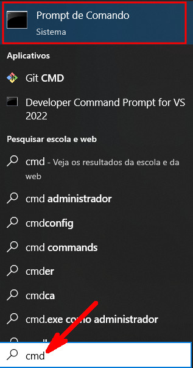

Esta atividade refere-se a este assunto da ementa da disciplina Sistema De Comunicação De Dados:
Serviços da internet. (FTP, E-MAIL, WWW, DOWNLOAD, UPLOAD, TELNET).
Como utilizar comandos de FTP (File TRansfer Protocol).
Veja esta imagem abaixo ao procurar pelo arquivo ea960.pdf. Perceba o destaque em torno do endereço que não HTTPS como é o comum.
Ao clicar no endereço, vem a resposta:
Significa que existe um outro meio para fazer o download do arquivo. É que será visto na sequência.
Na barra de pesquisa, digite "cmd" (sem aspas).
A imagem abaixo mostra o Prompt de Comando indicando o diretório que você se encontra. No exemplo da imagem a seguir, aparece o meu nome de usuário.
Atenção: todo texto a seguir é impresso a medida que os comandos são digitados. As partes com fundo amarelo são os comandos que você digita para que o servidor da Unicamp responda.
Você pode mudar para o diretório de sua preferência com o comando "cd" seguido do nome do diretório. No exemplo, eu mudei para "C:\faculdades\eep\2024s2\Sistema De Comunicação De Dados" porque ao concluir o download, o arquivo estará armazenado neste diretório.
C:\Users\Murilo>cd C:\faculdades\eep\2024s2\Sistema De Comunicação De Dados
C:\faculdades\eep\2024s2\Sistema De Comunicação De Dados>ftp
ftp> open ftp.dca.fee.unicamp.br
Conectado a www-dca.fee.unicamp.br. 220-=-=-=-=-=-=-=-=-=-=-=-=-=-=-=-=-=-=-=-=-=-=-=-=-=-=-=-=-=-=-=-=-=-=-= 220-= Welcome to the FTP server at the DCA-FEEC-UNICAMP = 220---------------------------------------------------------------------- 220-= Department of Computer Engineering and Industrial Automation = 220-= State University of Campinas = 220-= www.dca.fee.unicamp.br = 220-=-=-=-=-=-=-=-=-=-=-=-=-=-=-=-=-=-=-=-=-=-=-=-=-=-=-=-=-=-=-=-=-=-=-= 220- 220 200 Always in UTF8 mode. Usuário (www-dca.fee.unicamp.br:(none)): anonymous
Digite anonymous para o nome do usuário.
331 Please specify the password. Senha: 230 Login successful. ftp>
Pode deixar a senha em branco!!
ftp> ls 200 PORT command successful. Consider using PASV. 150 Here comes the directory listing. pub welcome.msg 226 Directory send OK. ftp: 21 bytes recebidos em 0.00Segundos 21000.00Kbytes/s. ftp> cd pub
ftp>cd docs
ftp>cd ea960
ftp> hash
Imprimindo a marca # para Ligado ftp: (2048 bytes/marca #) .
ftp> get ea960.pdf
200 PORT command successful. Consider using PASV.
150 Opening BINARY mode data connection for ea960.pdf (392329 bytes).
########################################################################
########################################################################
###############################################226 Transfer complete.
ftp: 392329 bytes recebidos em 1.19Segundos 330.52Kbytes/s.
ftp>
Imagem a seguir mostra o arquivo armazenado e pela data e hora mostra que foi feito para a atividade de hoje.
Talvez você possa encontrar arquivos da área de ciências contábeis nos servidores da Unicamp e se o protocolo for o FTP, agora você pode baixar o arquivo desejado.
O que deve entregue na tarefa do Teams? Ou uma captura de tela como esta abaixo ou o arquivo ea960.pdf. Tanto um como outro provam que você que você interagiu com o servidor FTP da Unicamp.